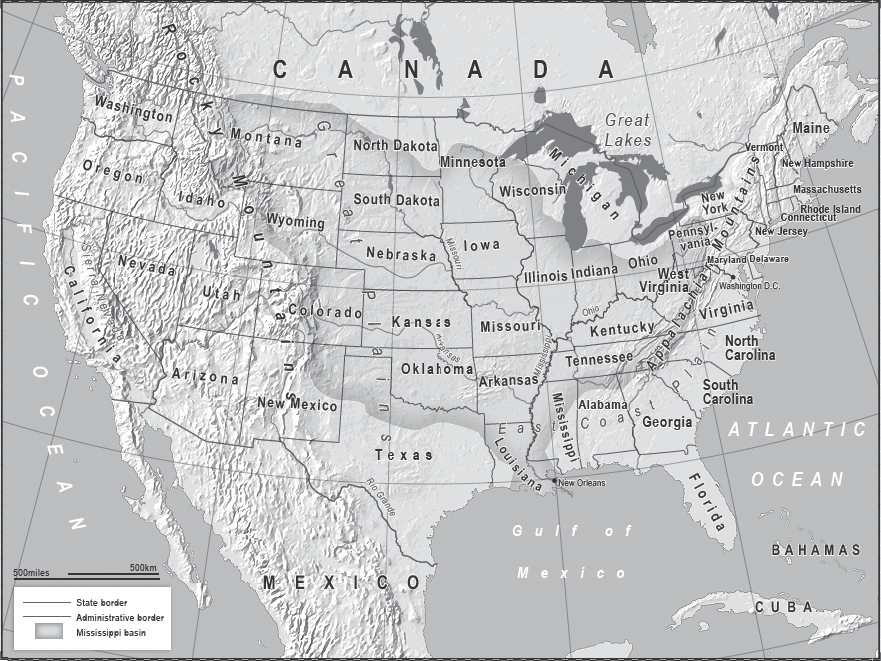

‘Reports of my death have been greatly exaggerated.’
Mark Twain

LOCATION, LOCATION, LOCATION. IF YOU WON THE LOTTERY, AND were looking to buy a country to live in, the first one the estate agent would show you would be the United States of America.
Twain was referring to the erroneous reporting of his death, but he could have been talking about the over-reporting of the demise of the USA.
It’s in a wonderful neighbourhood, the views are marvellous and there are some terrific water features, the transport links are excellent; and the neighbours? The neighbours are great, no trouble at all.
If you broke this living space up into numerous sections it would considerably lower its value – especially if the tenants did not all speak the same language and paid the rent in different currencies – but as one home, for one family, it can’t be bettered.
There are fifty American states, but they add up to one nation in a way the twenty-eight sovereign states of the European Union never can. Most of the EU states have a national identity far stronger, more defined, than any American state. It is easy to find a French person who is French first, European second, or one who pays little allegiance to the idea of Europe, but an American identifies with their Union in a way few Europeans do theirs. This is explained by geography, and by the history of the unification of the USA.
Painting this vast country in bold, broad brushstrokes from east to west, you can divide it into three parts.
First there is the East Coast Plain leading to the Appalachian Mountains, an area well watered by short but navigable rivers and with fertile soil. Then, heading further west, you have the Great Plains stretching all the way to the Rocky Mountains, and within this section lies the Mississippi basin with its network of huge, navigable rivers flowing into the Mississippi River all the way down to the Gulf of Mexico, which is sheltered by the peninsula of Florida and several islands. Once over the massive mountain range that is the Rockies you get to the desert, the Sierra Nevada Mountains, a narrow coastal plain, and finally to the shores of the Pacific Ocean.
To the north, above the Great Lakes, lies the Canadian Shield, the world’s largest area of Precambrian rock, much of which forms a barrier to human settlement. To the south-west – desert. Geography had determined that if a political entity could get to and then control the land ‘from sea to shining sea’, it would be a great power, the greatest history has known. Considering the continent is 3,000 miles from coast to coast, this was achieved in an astonishingly quick time.
When the Europeans first began to land and stay in the early seventeenth century, they quickly realised that the east coast of this ‘virgin’ territory was packed with natural harbours and fertile soil. Here was a place where they could live and, unlike their home countries, a place where they hoped they could live freely. Their descendants would go on to deny the native inhabitants their freedom, but that was not the intention of the first settlers. Geography pulled them across the Atlantic in ever greater numbers.
The last of the original thirteen colonies to be established was Georgia in 1732. The thirteen became increasingly independently minded all the way up to the American Revolutionary War (1775–83). At the beginning of this period the colonies, which gradually began to connect to each other, stretched 1,000 miles from Massachusetts in the north, down to Georgia, and had an estimated combined population of about 2.5 million people. They were bounded by the Atlantic to their east, and the Appalachian Mountains to their west. The Appalachians, 1,500 miles long, are impressive, but compared to the Rockies, not particularly high. Nevertheless, they still formed a formidable barrier to westward movement for the early settlers, who were busy consolidating what territory they had subdued and preparing to govern it themselves. The colonists had another barrier, this one political. The British government forbade settlement west of the Appalachians as it wanted to ensure that trade, and taxes, remained on the Eastern seaboard.
The Declaration of Independence (1776) states: ‘When in the course of human events, it becomes necessary for one people to dissolve the political bands which have connected them with another, and to assume the Powers of the earth, the separate and equal station to which the Laws of Nature and of Nature’s God entitle them, a decent respect to the opinions of mankind requires that they should declare the causes which impel them to the separation.’ It goes on to outline at some length those causes, and to state (with no hint of slave-owning irony) that it was self-evident that all men were created equal. These noble sentiments helped to fuel the victory in the War of Independence, which in turn gave birth to a new nation state.
In the early 1800s this new country’s leadership still had little idea that it was thousands of miles from the ‘South Sea’ or Pacific. Using Indian trails, a few explorers, for whom the word intrepid could have been coined, had pushed through the Appalachians and reached the Mississippi. There they thought they might find a waterway leading to the ocean and thus joining up with the vast tracts of lands the Spanish had explored across the south-western and Pacific coastal regions, including what are now Texas and California.
At this point the fledgling USA was far from secure, and if it had been restricted to its then boundaries, would have struggled to become a great power. Its citizens already had access to the Ohio River, just west of the Appalachians, but that led to the Mississippi, whose western bank was controlled by the French all the way down to the city of New Orleans. This gave the French command of American trade heading out to the Old World from the Gulf of Mexico, as well as the vast territory to the west in what is now the American heartland. In 1802, a year after Thomas Jefferson assumed the presidency, he wrote: ‘There is on the globe one single spot, the possessor of which is our natural and habitual enemy. It is New Orleans.’
So France was the possessor and the problem; but the solution, unusually, was not warfare.
In 1803 the United States simply bought control of the entire Louisiana Territory from France. The land stretched from the Gulf of Mexico north-west up to the headwaters of the tributaries of the Mississippi River in the Rocky Mountains. It was an area equivalent in size to modern-day Spain, Italy, France, the UK and Germany combined. With it came the Mississippi basin, from which flowed America’s route to greatness.
At the stroke of a pen, and the handing over of $15 million, the Louisiana Purchase of 1803 doubled the size of the USA and gave it mastery over the greatest inland water transport route in the world. As the American historian Henry Adams wrote, ‘Never did the United States get so much for so little.’
The greater Mississippi basin has more miles of navigable river than the rest of the world put together. Nowhere else are there so many rivers whose source is not in high land, and whose waters run smoothly all the way to the ocean across vast distances. The Mississippi, fed by much of the basin river system, begins near Minneapolis and ends 1,800 miles away in the Gulf of Mexico. So the rivers were the natural conduit for ever-increasing trade, leading to a great port and all using waterborne craft which was, and is, many times cheaper than road travel.
The Americans now had strategic geographical depth, a massive fertile land and an alternative to the Atlantic ports with which to conduct business. They also had ever-expanding routes east to west linking the East Coast to the new territory, and then the river systems flowing north to south to connect the then sparsely populated lands with each other, thus encouraging America to form as a single entity.
There was now a sense that the nation would become a colossus, a continental power. They pushed onwards, ever westwards, but with an eye on the south and the security of the jewel in the crown – the Mississippi.
By 1814 the British had gone, and the French had given up on Louisiana. The trick now was to get the Spanish to go. It wasn’t too difficult. The Spanish were exhausted by the war in Europe against Napoleon; the Americans were pushing the Seminole Indian nation into Spanish Florida, and Madrid knew that waves of settlers would be following. In 1819 the Spanish ceded Florida to the USA and with it a massive amount of territory.
The Louisiana Purchase had given the USA the heartland, but the Transcontinental Treaty of 1819 gave them something almost as valuable. The Spanish accepted that the USA would have jurisdiction in the far west above the 42nd parallel, on what is now the border of California and Oregon, while Spain would control what lay below, west of the American territories. The USA had reached the Pacific.
At the time most Americans thought the great victory of 1819 was getting Florida, but Secretary of State John Quincy Adams wrote in his diary: ‘The acquisition of a definite line of boundary to the [Pacific] forms a great epoch in our history.’
But there was another Spanish-speaking problem – Mexico.
Because the Louisiana Purchase doubled the size of the USA, when Mexico became independent of Spain in 1821 its border was just 200 miles from the port of New Orleans. In the twenty-first century Mexico poses no territorial threat to the USA, although its proximity causes America problems, as it feeds its northern neighbour’s appetite for illegal labour and drugs.
In 1821 that was different. Mexico controlled land all the way up to northern California, which the USA could live with, but it also stretched out east, including what is now Texas which, then as now, borders Louisiana. Mexico’s population at the time was 6.2 million, the USA’s 9.6 million. The US army may have been able to see off the mighty British, but they had been fighting 3,000 miles from home with supply lines across an ocean. The Mexicans were next door.
Quietly, Washington encouraged Americans and new arrivals to begin to settle on both sides of the US–Mexican border. Waves of immigrants came and spread west and south-west. There was little chance of them putting down roots in the region we now know as modern Mexico, thus assimilating, and boosting the population numbers there. Mexico is not blessed in the American way. It has poor-quality agricultural land, no river system to use for transport, and was wholly undemocratic, with new arrivals having little chance of ever being granted land.
While the infiltration of Texas was going on, Washington issued the ‘Monroe Doctrine’ (named after President James Monroe) in 1823. This boiled down to warning the European powers that they could no longer seek land in the Western Hemisphere, and that if they lost any parts of their existing territory they could not reclaim them. Or else.
By the mid-1830s there were enough white settlers in Texas to force the Mexican issue. The Mexican, Catholic, Spanish-speaking population numbered in the low thousands, but there were about 20,000 white Protestant settlers. The Texas Revolution of 1835–6 drove the Mexicans out, but it was a close-run thing, and had the settlers lost then the Mexican army would have been in a position to march on New Orleans and control the southern end of the Mississippi. It is one of the great ‘what ifs’ of modern history.
However, history turned the other way and Texas became independent via American money, arms and ideas. The territory went on to join the Union in 1845 and together they fought the 1846–8 Mexican War, in which they crushed their southern neighbour, which was required to accept that Mexico ended in the sands of the southern bank of the Rio Grande.
With California, New Mexico and land which is now Arizona, Nevada, Utah and part of Colorado included, the borders of continental USA then looked similar to those of today, and they are in many ways natural borders. In the south, the Rio Grande runs through desert; to the north are great lakes and rocky land with few people close to the border, especially in the eastern half of the continent; and to the east and west – the great oceans. However, in the twenty-first century, in the south-west the cultural historical memory of the region as Hispanic land is likely to resurface, as the demographics are changing rapidly and Hispanics will be the majority population within a few decades.
But back to 1848. The Europeans had gone, the Mississippi basin was secure from land attack, the Pacific was reached and it was obvious that the remaining Indian nations would be subdued: there was no threat to the USA. It was time to make some money, and then venture out across the seas to secure the approaches to the three coastlines of the superpower-to-be.
The California Gold Rush of 1848–9 helped, but the immigrants were heading west anyway. After all, there was a continental empire to build, and as it developed, more immigrants followed. The Homestead Act of 1862 awarded 160 acres of federally owned land to anyone who farmed it for five years and paid a small fee. If you were a poor man from Germany, Scandinavia, or Italy, why go to Latin America and be a serf, when you could go to the USA and be a free land-owning man?
In 1867 Alaska was bought from Russia. At the time it was known as ‘Seward’s folly’ after the Secretary of State, William Seward, who agreed the deal. He paid $7.2 million, or 2 cents an acre. The press accused him of purchasing snow, but minds were changed with the discovery of major gold deposits in 1896. Decades later huge reserves of oil were also found.
Two years on, in 1869, came the opening of the transcontinental railroad. Now you could cross the country in a week, whereas it had previously taken several hazardous months.
As the country grew, and grew wealthy, it began to develop a Blue Water navy. For most of the nineteenth century foreign policy was dominated by expanding trade and avoiding entanglements outside the neighbourhood, but it was time to push out and protect the approaches to the coastlines. The only real threat was from Spain – it may have been persuaded to leave the mainland but it still controlled the islands of Cuba, Puerto Rico and part of what is now the Dominican Republic.
Cuba in particular kept American presidents awake at night, as it would again in 1962 during the Cuban Missile Crisis. The island sits just off Florida, giving it access to and potential control of the Florida Straits and the Yucatan Channel in the Gulf of Mexico. This is the exit and entry route for the port of New Orleans.
Spain’s power may have been diminishing towards the end of the nineteenth century, but it was still a formidable military force. In 1898 the USA declared war on Spain, routed its military and gained control of Cuba, with Puerto Rica, Guam and the Philippines thrown in for good measure. They would all come in useful, but Guam in particular is a vital strategic asset and Cuba a strategic threat if controlled by a major power.
In 1898 that threat was removed by war with Spain. In 1962 it was removed by the threat of war with the Soviet Union after they blinked first. Today no great power sponsors Cuba and it appears destined to come under the cultural, and probably political, influence of the USA again.
America was moving quickly. In the same year it secured Cuba, the Florida Straits and to a great extent the Caribbean, it also annexed the Pacific island of Hawaii, thus protecting the approaches to its own west coast. In 1903 America signed a treaty leasing it exclusive rights to the Panama Canal. Trade was booming.
Most presidents bore in mind George Washington’s advice in his farewell address in 1796 not to get involved in ‘inveterate antipathies against particular nations, and passionate attachments for others’, and to ‘steer clear of permanent alliances with any portion of the foreign world’.
Apart from a late – albeit crucial – entry into the First World War, twentieth-century America did manage, mostly, to avoid entanglements and alliances until 1941.
The Second World War changed everything. The USA was attacked by an increasingly militaristic Japan after Washington imposed economic sanctions on Tokyo which would have brought the country to its knees. The Americans came out swinging. They projected their now vast power around the world, and in order to keep things that way, this time they didn’t go home.
As the world’s greatest economic and military post-war power, America now needed to control the world’s sea lanes, to keep the peace and get the goods to market.
They were the ‘last man standing’. The Europeans had exhausted themselves, and their economies, like their towns and cities, were in ruins. The Japanese were crushed, the Chinese devastated and at war with each other, the Russians weren’t even in the capitalist game.
A century earlier, the British had learnt they needed forward bases and coaling stations from which to project and protect their naval power. Now, with Britain in decline, the Americans looked lasciviously at the British assets and said, ‘Nice bases – we’ll have them.’
The price was right. In the autumn of 1940 the British had desperately needed more warships. The Americans had fifty spare and so, with what was called the ‘Destroyers for Bases Agreement’, the British swapped their ability to be a global power for help in remaining in the war. Almost every British naval base in the Western Hemisphere was handed over.
This was, and is still, for all countries, about concrete. Concrete in the building of ports, runways, hardened aircraft hangars, fuel depots, dry docks and Special Forces training areas. In the East, after the defeat of Japan, America seized the opportunity to build these all over the Pacific. Guam, halfway across, they already had; now they had bases right up to the Japanese island of Okinawa in the East China Sea.
The Americans also looked to the land. If they were going to pay to reconstruct Europe through the Marshall Plan of 1948–51, they had to ensure that the Soviet Union wouldn’t wreck the place and reach the Atlantic coast. The Doughboys didn’t go home. Instead they set up shop in Germany and faced down the Red Army across the North European Plain.
In 1949 Washington led the formation of NATO and with it effectively assumed command of the Western world’s surviving military might. The civilian head of NATO might well be a Belgian one year, a Brit the next, but the military commander is always an American, and by far the greatest firepower within NATO is American.
No matter what the treaty says, NATO’s Supreme Commander ultimately answers to Washington. The UK and France would learn to their cost during the Suez Crisis of 1956, when they were compelled by American pressure to cease their occupation of the canal zone, losing most of their influence in the Middle East as a result, that a NATO country does not hold a strategic naval policy without first asking Washington.
With Iceland, Norway, Britain and Italy (all founding members of NATO) having granted the USA access and rights to their bases, it now dominated the North Atlantic and the Mediterranean as well as the Pacific. In 1951 it extended its domination there down to the south by forming an alliance with Australia and New Zealand, and also to the north following the Korean War of 1950–53.
In the 1960s the USA’s failure in Vietnam damaged its confidence, and made it more cautious about foreign entanglements. However, what was effectively a defeat did not substantially alter America’s global strategy.
There were now only three places from which a challenge to American hegemony could come: a united Europe, Russia and China. All would grow stronger, but two would reach their limits.
The dream of some Europeans of an EU with ‘ever closer union’ and a common foreign and defence policy is dying slowly before our eyes, and even if it were not the EU countries spend so little on defence that ultimately they remain reliant on the USA. The economic crash of 2008 has left the European powers reduced in capacity and with little appetite for foreign adventures.
In 1991 the Russian threat had been seen off due to Russia’s own staggering economic incompetence, military overstretch and failure to persuade the subjected masses in its empire that gulags and the overproduction of state-funded tractors was the way ahead. The recent push-back by Putin’s Russia is a thorn in America’s side, but not a serious threat to America’s dominance. When President Obama described Russia as ‘no more than a regional power’ in 2014 he may have been needlessly provocative, but he wasn’t wrong. The bars of Russia’s geographical prison, as seen in Chapter One, are still in place: they still lack a warm-water port with access to the global sea lanes and still lack the military capacity in wartime to reach the Atlantic via the Baltic and North seas, or the Black Sea and the Mediterranean.
The USA was partially behind the change of government in Ukraine in 2014. It wanted to extend democracy in the world, and it wanted to pull Ukraine away from Russian influence and thus weaken President Putin. Washington knows that during the last decade, as America was distracted in Iraq and Afghanistan, the Russians took advantage in what they call their ‘near abroad’, regaining a solid footing in places such as Kazakhstan and seizing territory in Georgia. Belatedly, and somewhat half-heartedly, the Americans have been trying to roll back Russian gains.
Americans care about Europe, they care about NATO, they will sometimes act (if it is in the American interest), but Russia is now, for the Americans, mostly a European problem, albeit one they keep an eye on.
That leaves China, and China rising.
Most analysis written over the past decade assumes that by the middle of the twenty-first century China will overtake the USA and become the leading superpower. For reasons partially discussed in Chapter Two, I am not convinced. It may take a century.
Economically the Chinese are on their way to matching the Americans and that buys them a lot of influence and a place at the top table, but militarily and strategically they are decades behind. The USA will spend those decades attempting to ensure it stays that way, but it feels inevitable that the gap will close.
The concrete costs a lot. Not just to mix and pour, but to be allowed to mix and pour it where you want to. As we saw with the ‘Destroyers for Bases Agreement’, American assistance to other governments is not always entirely altruistic. Economic and, equally importantly, military assistance buys permission to pour the concrete, but much more as well, even if there is also an added cost.
For example, Washington might be outraged at human rights abuses in Syria (a hostile state) and express its opinions loudly, but its outrage at abuses in Bahrain might be somewhat more difficult to hear, muffled as it has been by the engines of the US 5th Fleet which is based in Bahrain as the guest of the Bahraini government. On the other hand, assistance does buy the ability to suggest to government B (say Burma) that it might want to resist the overtures of government C (say China). In that particular example the USA is behind the curve because the Burmese government only recently began to open up to most of the outside world and Beijing has a head start.
However, when it comes to Japan, Thailand, Vietnam, South Korea, Singapore, Malaysia, Indonesia and others, the Americans are pushing at a door already open due to those countries’ anxiety about their giant neighbour and keenness to engage with Washington. They may all have issues with each other, but those issues are dwarfed by the knowledge that if they do not stand together they will be picked off one by one and eventually fall under Chinese hegemony.
The USA is still in the opening phase of what in 2011 the then Secretary of State Hillary Clinton called ‘the pivot to China’. It was an interesting phrase, taken by some to mean the abandonment of Europe; but a pivot towards one place does not mean the abandonment of another. It is more a case of how much weight you put on which foot.
Many US government foreign policy strategists are persuaded that the history of the twenty-first century will be written in Asia and the Pacific. Half of the world’s population lives there, and if India is included it is expected to account for half of global economic output by 2050.
Hence we will see the USA increasingly investing time and money in East Asia to establish its presence and intentions in the region. For example, in Northern Australia the Americans have set up a base for the US Marine Corps. But in order to exert real influence, they may also have to invest in limited military action to reassure their allies that they will come to their rescue in the event of hostilities. For example, if China begins shelling a Japanese destroyer and it looks as if they might take further military action, the US Navy may have to fire warning shots towards the Chinese navy, or even fire directly, to signal that it is willing to go to war over the incident. Equally, when North Korea fires at South Korea, the south fires back, but currently the US does not. Instead it puts forces on alert in a public manner to send a signal. If the situation escalated it would then fire warning shots at a North Korean target, and finally, direct shots. It’s a way of escalating without declaring war – and this is when things get dangerous.
The USA is seeking to demonstrate to the whole region that it is in their best interests to side with Washington – China is doing the opposite. So when challenged, each side must react, because for each challenge it ducks, its allies’ confidence, and competitors’ fear, slowly drains away until eventually there is an event which persuades a state to switch sides.
Analysts often write about the need for certain cultures not to lose face, or ever be seen to back down, but this is not just a problem in the Arab or East Asian cultures – it is a human problem expressed in different ways. It may well be more defined and openly articulated in those two cultures, but American foreign policy strategists are as aware of the issue as any other power. The English language even has two sayings which demonstrate how deeply ingrained the idea is: ‘Give them an inch and they’ll take a mile’, and President Theodore Roosevelt’s maxim of 1900 which has now entered the political lexicon: ‘Speak softly, but carry a big stick.’
The deadly game in this century will be how the Chinese, Americans and others in the region manage each crisis that arises without losing face, and without building up a deep well of resentment and anger on both sides.
The Cuban Missile Crisis is generally considered an American victory; what is less publicised is that several months after Russia removed its missiles from Cuba, the United States removed its Jupiter missiles (which could reach Moscow) from Turkey. It was actually a compromise, with both sides, eventually, able to tell their respective publics that they had not capitulated.
In the twenty-first-century Pacific there are more great power compromises to be made. In the short term most, but not all, are likely to be made by the Chinese – an early example is Beijing’s declaration of an Air Defence Identification Zone requiring foreign nations to inform them before entering what is disputed territory, and the Americans deliberately flying through it without telling them. The Chinese gained something by declaring the zone and making it an issue; the USA gained something by being seen not to comply. It is a long game.
The US policy regarding the Japanese is to reassure them that they share strategic interests vis-à-vis China and ensure that the US base in Okinawa remains open. The Americans will assist the Japanese Self Defence Force to be a robust body, but simultaneously restrict Japan’s military ability to challenge the US in the Pacific.
While all the other countries in the region matter, in what is a complicated diplomatic jigsaw puzzle, the key states look to be Indonesia, Malaysia and Singapore. These three sit astride the Strait of Malacca, which at its narrowest is only 1.7 miles across. Every day through that strait come 12 million barrels of oil heading for an increasingly thirsty China and elsewhere in the region. As long as these three countries are pro-American, the Americans have a key advantage.
On the plus side, the Chinese are not politically ideological, they do not seek to spread Communism, nor do they covet (much) more territory in the way the Russians did during the Cold War, and neither side is looking for conflict. The Chinese can accept America guarding most of the sea lanes which deliver Chinese goods to the world, so long as the Americans accept that there will be limits to just how close to China that control extends.
There will be arguments, and nationalism will be used to ensure the unity of the Chinese people from time to time, but each side will be seeking compromise. The danger comes if they misread each other and/ or gamble too much.
There are flashpoints. The Americans have a treaty with Taiwan which states that if the Chinese invade what they regard as their 23rd province, the USA will go to war. A red line for China, which could spark an invasion, is formal recognition of Taiwan by the USA, or a declaration of independence by Taiwan. However, there is no sign of that, and a Chinese invasion cannot be seen on this side of the horizon.
As China’s thirst for foreign oil and gas grows, so that of the United States declines. This will have a huge impact on its foreign relations, especially in the Middle East, with knock-on effects for other countries.
Due to offshore drilling in US coastal waters, and underground fracking across huge regions of the country, America looks destined to become not just self-sufficient in energy, but a net exporter of energy by 2020. This will mean that its focus on ensuring a flow of oil and gas from the Gulf region will diminish. It will still have strategic interests there, but the focus will no longer be so intense. If American attention wanes, the Gulf nations will seek new alliances. One candidate will be Iran, another China, but that will only happen when the Chinese have built their Blue Water navy and, equally importantly, are prepared to deploy it.
The US 5th Fleet is not about to sail away from its port in Bahrain – that is a piece of concrete it would give up reluctantly. However, if the energy supplies of Saudi Arabia, Kuwait, the UAE and Qatar are no longer required to keep American lights on, and cars on the road, the American public and Congress will ask, what is it there for? If the response is ‘to check Iran’ it may not be enough to quash the debate.
Elsewhere in the Middle East, US policy in the short term is to prevent Iran from becoming too strong whilst at the same time reaching for what is known as the ‘grand bargain’ – an agreement settling the many issues which divide the two countries, and ending three and a half decades of enmity. With the Arab nations embarking on what may be a decades-long struggle with armed Islamists, Washington looks as if it has given up on the optimistic idea of encouraging Jeffersonian democracies to emerge, and will concentrate on attempting to manage the situation whilst at the same time desperately trying not to get sand on the boots of US soldiers.
The close relationship with Israel may cool, albeit slowly, as the demographics of the USA change. The children of the Hispanic and Asian immigrants now arriving in the United States will be more interested in Latin America and the Far East than in a tiny country on the edge of a region no longer vital to American interests.
The policy in Latin America will be to ensure that the Panama Canal remains open, to enquire about the rates to pass through the proposed Nicaraguan canal to the Pacific, and to keep an eye on the rise of Brazil in case it gets any ideas about its influence in the Caribbean Sea.
In Africa, the Americans are but one nation seeking the continent’s natural wealth, but the nation finding most of it is China. As in the Middle East, the USA will watch the Islamist struggle in North Africa with interest but try not to get involved much closer than 30,000 feet above the ground.
America’s experiment with nation-building overseas appears to be over.
In Iraq, Afghanistan and elsewhere, the USA underestimated the mentality and strength of small powers and of tribes. The Americans’ own history of physical security and unity may have led them to overestimate the power of their democratic rationalist argument, which believes that compromise, hard work and even voting would triumph over atavistic, deep-seated historical fears of ‘the other’, be they Sunni, Shia, Kurd, Arab, Muslim or Christian. They assumed people would want to come together whereas in fact many dare not try and would prefer to live apart because of their experiences. It is a sad reflection upon humanity, but it appears throughout many periods of history, and in many places, to be an unfortunate truth. The American actions took the lid off a simmering pot which had temporarily hidden that truth.
This does not make American policymakers ‘naive’, as some of the snootier European diplomats like to believe; but they do have a ‘can do’ and a ‘can fix’ attitude which inevitably will not always work.
For thirty years it has been fashionable to predict the imminent or ongoing decline of the USA. This is as wrong now as it was in the past. The planet’s most successful country is about to become self-sufficient in energy, it remains the pre-eminent economic power and it spends more on research and development for its military than the overall military budget of all the other NATO countries combined. Its population is not ageing as in Europe and Japan, and a 2013 Gallup study showed that 25 per cent of all people hoping to emigrate put the USA as their first choice of destination. In the same year Shanghai University listed what its experts judged the top twenty universities of the world: seventeen were in the USA.
The Prussian statesman Otto von Bismarck, in a double-edged remark, said more than a century ago that ‘God takes special care of drunks, children and the United States of America.’ It appears still to be true.